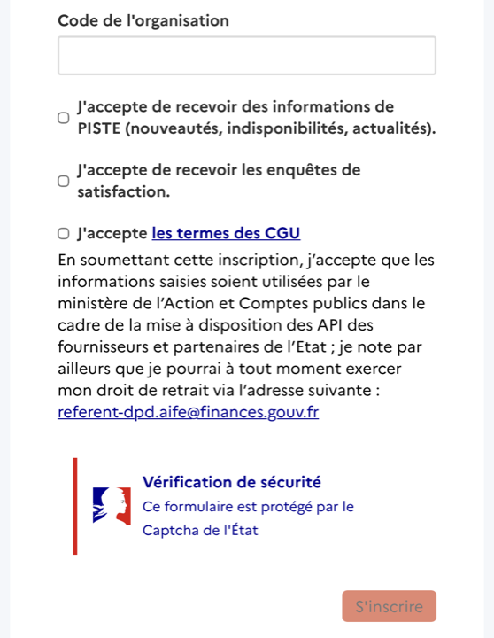
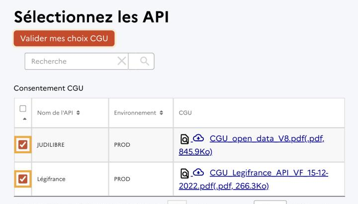
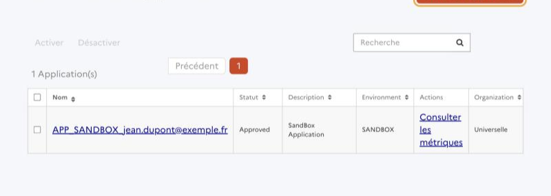
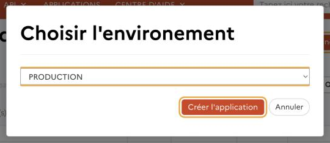
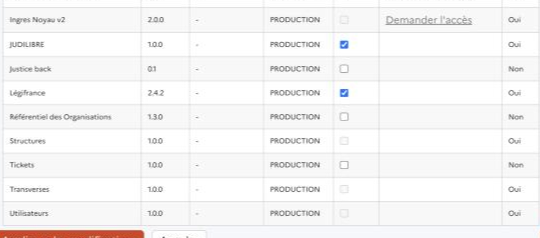

Les identifiants PISTE de ce poste sont enregistrés dans .
Accès Légifrance et Judilibre à configurer plus tard
Sans identifiants PISTE, PieceMaker ne peut pas citer les textes ni la jurisprudence officiels. Relancez l'installation pour retrouver ce guide.
Accès Légifrance et Judilibre
PieceMaker interroge directement les bases officielles Légifrance (textes) et Judilibre (jurisprudence de la Cour de cassation et des juridictions). L'État les ouvre gratuitement par le portail PISTE, avec des identifiants personnels. Comptez une dizaine de minutes ; chaque bouton ouvre la bonne page dans votre navigateur.
1. Compte PISTE
2. Conditions d'utilisation
3. Application
4. Identifiants
Créez votre compte PISTE
Renseignez votre nom et votre adresse e-mail : elle deviendra votre identifiant PISTE.
Choisissez un mot de passe d'au moins 12 caractères avec une majuscule, une minuscule, un chiffre et un caractère spécial parmi ! @ # ^ + ( ) , ; . ? : { } | _ § ~.
Laissez « Code de l'organisation » vide : vous serez rattaché à l'organisation « Universelle », qui donne accès à Légifrance et à JUDILIBRE.
Cochez « J'accepte les termes des CGU », passez la vérification de sécurité, puis cliquez sur « S'inscrire ».
Ouvrez l'e-mail envoyé par PISTE et cliquez sur le lien d'activation, puis connectez-vous.

Laisser vide
À cocher
Bas du formulaire d'inscription sur piste.gouv.fr.
Vous avez déjà un compte PISTE ? et passez à l'étape 2.
Acceptez les conditions d'utilisation de Légifrance et JUDILIBRE
Sans cette acceptation, PISTE grise les cases de ces deux API à l'étape suivante.
Dans le champ « Recherche », tapez Légifrance et cochez la ligne dont l'environnement est PROD.
Recommencez avec JUDILIBRE et cochez sa ligne PROD.
Cliquez sur « Valider mes choix CGU ».

Les deux lignes PROD cochées. Une case grisée et déjà cochée signifie que les CGU sont déjà acceptées.
Créez l'application de production « PieceMaker »
Cliquez sur « Créer une application », laissez l'environnement PRODUCTION, puis cliquez sur « Créer l'application ».
Remplissez au minimum : Nom de l'applicationPieceMaker, votre e-mail, Information sur la structure (le nom de votre cabinet) et Responsable d'application (votre nom).
Dans « Sélectionner les API », cochez la colonne « Souscrite » pour JUDILIBRE et pour Légifrance. Si une case est grisée, revenez à l'étape 2.
Enregistrez l'application.
Ne prenez pas l'application « APP_SANDBOX_… » créée automatiquement : c'est un bac à sable, ses identifiants ne fonctionnent pas avec les vraies bases.



Souscrite
Captures de piste.gouv.fr ; les adresses affichées sont fictives.
Copiez vos identifiants dans PieceMaker
Dans , cliquez sur le nom de votre application PieceMaker.
Dans la section « Identifiants Oauth », copiez le Client ID et collez-le ci-dessous.
Cliquez sur « Consulter le secret », copiez le Client Secret et collez-le ci-dessous.